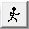

New
Create a new Batch (.btp) file

Open
Open an existing Batch file

Save
Save the current Batch file
Save As
Save the current Batch file with a new name
Copy
Copy a highlighted section text to the Windows Clipboard
Find
Find specified text
Repeat
Find next occurrence of the text
Font
Change the report font
TIPSY
Opens interactive TIPSY in a separate window

Run
Same as File-Run. Used to rerun a Batch file when only the input file has changed.